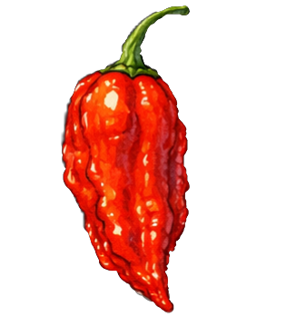

FARM TO BOTTLE · SEED TO HARVEST
Про нас
Gapka Homestead Inferno — маленька садиба з великим захопленням перцями, насінням і справжніми смаками.
Ласкаво просимо на наш Small Batch Homestead. Тут ми власноруч плекаємо генетику, від перевіреної часом класики до екстремальних авторських ліній.
Кожна крапля нашої ультра-гострої лінійки соусів INFERNO народжена саме з цього насіння, вирощеного під наглядом сонця та нашої уваги. Ми відібрали світові легенди: Carolina Reaper, Ghost та екзотичні Aji Lemon і Rocoto
та екзотичні Aji Lemon і Rocoto  , а також інші, їх можна знайти у каталозі.
, а також інші, їх можна знайти у каталозі.
Це не промислове виробництво — це справжній фермерський відбір на вагу, колір та автентичний смак. Ми пропонуємо не просто насіння, а результат наших щоденних експериментів на садибі. Вирощування, що стає пристрастю.
Кожна крапля нашої ультра-гострої лінійки соусів INFERNO народжена саме з цього насіння, вирощеного під наглядом сонця та нашої уваги. Ми відібрали світові легенди: Carolina Reaper, Ghost

, Habanero , Fatalii, Red Savina, ScorpionЦе не промислове виробництво — це справжній фермерський відбір на вагу, колір та автентичний смак. Ми пропонуємо не просто насіння, а результат наших щоденних експериментів на садибі. Вирощування, що стає пристрастю.
Від насіння до соусу
Ми самі вирощуємо рослини, спостерігаємо за сортами, відбираємо плоди та зберігаємо насіння. Цей шлях дає нам змогу краще знати кожну культуру й працювати з власною сировиною для соусів.
Наш каталог — це колекція сортів і продуктів, за якими стоять сезонна праця, експерименти та особистий досвід.